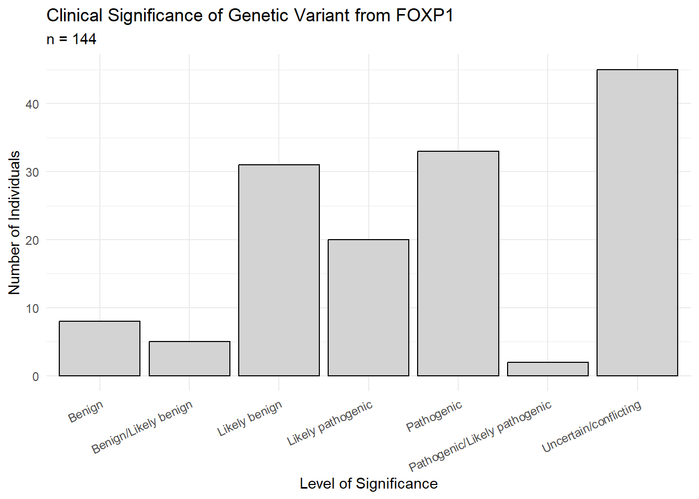
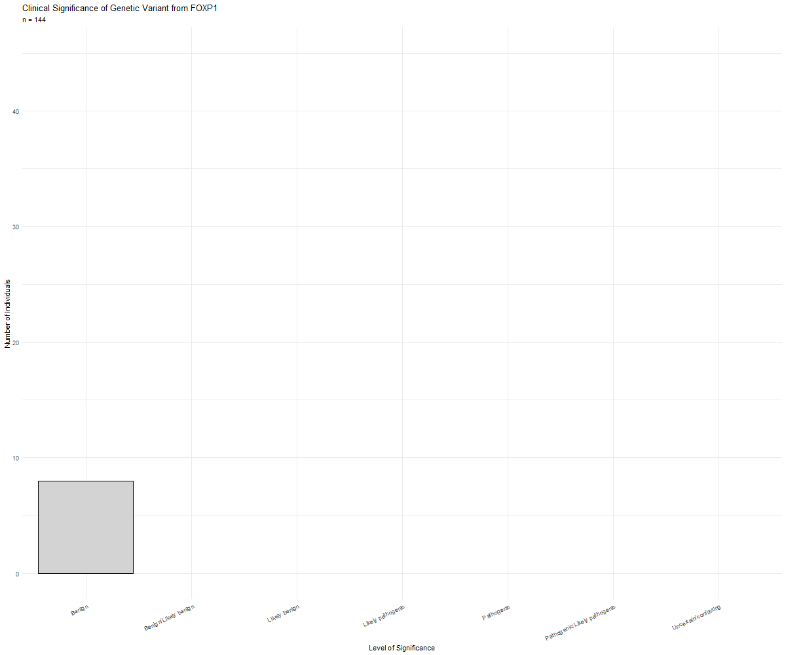

library(pacman)
p_load(readr, tidyr, magrittr, knitr, tidyverse, janitor, broom, ggplot2, forcats, epitools, dplyr, xfun, plotly)Just messing around with interactive plots.
The data used for this tinkering is found on the National Library of Medicine ClinVar database.
# load data
# imported from directory
# Helpful note to self: when loading csv files from "copy path" delete 'C:' and change all \ to /
CVFP1 <- read_csv("/Users/mckjo/OneDrive/Desktop/GitBlog/posts/FOXP1 Analysis/ShinyClinVar.csv")
# clean variable names
janitor::clean_names(CVFP1)# A tibble: 144 × 14
x1 link gene_symbol type consequence clinical_significance review
<dbl> <chr> <chr> <chr> <chr> <chr> <chr>
1 1 "<a href=\"… FOXP1 SNV Stop gain Pathogenic Crite…
2 2 "<a href=\"… FOXP1 SNV Missense Benign/Likely benign Crite…
3 3 "<a href=\"… FOXP1 SNV Intronic Benign Crite…
4 5 "<a href=\"… FOXP1 SNV Intronic Benign Crite…
5 6 "<a href=\"… FOXP1 SNV Missense Likely benign Crite…
6 7 "<a href=\"… FOXP1 SNV Intronic Benign Crite…
7 8 "<a href=\"… FOXP1 SNV Missense Benign/Likely benign Crite…
8 11 "<a href=\"… FOXP1 SNV Missense Pathogenic No as…
9 12 "<a href=\"… FOXP1 SNV Missense Likely benign Crite…
10 13 "<a href=\"… FOXP1 SNV Synonymous Uncertain/conflicting Crite…
# ℹ 134 more rows
# ℹ 7 more variables: phenotype_list <chr>, name <chr>, ref_aa <chr>,
# alt_aa <chr>, pos_aa <dbl>, cadd_phred <chr>, gnom_ad_binary_char <chr># number of rows (144)
nrow(CVFP1)[1] 144# convert character variables to factors
CVFP1 <- CVFP1 %>%
mutate_if(is.character, as.factor)
# summary of dataset
summary(CVFP1) ...1
Min. : 1.00
1st Qu.: 91.75
Median :136.50
Mean :130.18
3rd Qu.:186.25
Max. :243.00
Link
<a href="https://www.ncbi.nlm.nih.gov/clinvar/variation/1013484" target="_blank">1013484</a>: 1
<a href="https://www.ncbi.nlm.nih.gov/clinvar/variation/1018781" target="_blank">1018781</a>: 1
<a href="https://www.ncbi.nlm.nih.gov/clinvar/variation/1030051" target="_blank">1030051</a>: 1
<a href="https://www.ncbi.nlm.nih.gov/clinvar/variation/1030052" target="_blank">1030052</a>: 1
<a href="https://www.ncbi.nlm.nih.gov/clinvar/variation/1065605" target="_blank">1065605</a>: 1
<a href="https://www.ncbi.nlm.nih.gov/clinvar/variation/1098603" target="_blank">1098603</a>: 1
(Other) :138
GeneSymbol Type consequence ClinicalSignificance
FOXP1:144 SNV:144 3-UTR : 1 Benign : 8
Intronic :21 Benign/Likely benign : 5
Missense :71 Likely benign :31
Splice-D/A:13 Likely pathogenic :20
Stop gain :17 Pathogenic :33
Synonymous:21 Pathogenic/Likely pathogenic: 2
Uncertain/conflicting :45
review
Criteria provided/ conflicting interpretations : 6
Criteria provided/ multiple submitters/ no conflicts: 16
Criteria provided/ single submitter :113
No assertion criteria provided : 9
PhenotypeList
Not provided/ not specified :68
Mental retardation with language impairment and with or without autistic features :28
History of neurodevelopmental disorder :10
Intellectual disability : 6
Inborn genetic diseases : 5
Not provided/ not specified|History of neurodevelopmental disorder|Not provided/ not specified: 5
(Other) :22
Name ref_aa alt_aa
NM_001244808.2(FOXP1):c.869+1G>A : 1 Arg :16 Ter :17
NM_001244810.1(FOXP1):c.1348+2T>C : 1 Ala :14 Thr :13
NM_001349338.3(FOXP1):c.1096A>G (p.Met366Val): 1 Gln : 9 Ala : 9
NM_001349338.3(FOXP1):c.119A>T (p.Glu40Val) : 1 Thr : 9 Ser : 9
NM_001349338.3(FOXP1):c.1313G>A (p.Arg438Gln): 1 Tyr : 9 Gly : 7
NM_001349338.3(FOXP1):c.1319C>G (p.Ser440Ter): 1 (Other):52 (Other):54
(Other) :138 NA's :35 NA's :35
pos_aa CADD_phred gnomAD_binary_char
Min. : 3.0 0.070793: 1 No :83
1st Qu.:192.0 0.204885: 1 Yes:61
Median :443.0 0.287364: 1
Mean :363.8 0.323585: 1
3rd Qu.:514.0 0.325591: 1
Max. :674.0 0.352630: 1
NA's :35 (Other) :138 # removing the first two colummns
CVFP1 <- CVFP1[, -c(1, 2)]
# double checking the two columns were removed
head(CVFP1)# A tibble: 6 × 12
GeneSymbol Type consequence ClinicalSignificance review PhenotypeList Name
<fct> <fct> <fct> <fct> <fct> <fct> <fct>
1 FOXP1 SNV Stop gain Pathogenic Criteri… Mental retar… NM_0…
2 FOXP1 SNV Missense Benign/Likely benign Criteri… Aortic valve… NM_0…
3 FOXP1 SNV Intronic Benign Criteri… Not provided… NM_0…
4 FOXP1 SNV Intronic Benign Criteri… Not provided… NM_0…
5 FOXP1 SNV Missense Likely benign Criteri… Not provided… NM_0…
6 FOXP1 SNV Intronic Benign Criteri… Not provided… NM_0…
# ℹ 5 more variables: ref_aa <fct>, alt_aa <fct>, pos_aa <dbl>,
# CADD_phred <fct>, gnomAD_binary_char <fct># list of column names
(column_names <- colnames(CVFP1)) [1] "GeneSymbol" "Type" "consequence"
[4] "ClinicalSignificance" "review" "PhenotypeList"
[7] "Name" "ref_aa" "alt_aa"
[10] "pos_aa" "CADD_phred" "gnomAD_binary_char" Static Data Visualizations
Bar Plots
ggplot(CVFP1, aes(x = ClinicalSignificance)) + geom_bar(color = "black", fill = "lightgray") +
labs(title = "Clinical Significance of Genetic Variant from FOXP1",
subtitle = "n = 144",
x = "Level of Significance",
y = "Number of Individuals") +
theme_minimal() +
theme(axis.text.x = element_text(angle = 25, hjust = 1))
Interactive Data Visualizations
Bar Plots
Note: As of August 3rd, 2023, I am unable to render using ‘plotly’. The code chunk below has came to a halt – I’ve troubleshooted by restarting, clearing the console and environment, checking for package conflicts, making sure everything is updated, removed my previous code with layout() and am still having this error:
- checked again on August 21st
Quitting from lines 68-138 [plotly] (index.qmd)
Error in add_html_caption():
! unused argument (xfun::grep_sub(“1* <[^>]+aria-labelledby[ ]* =[ ] * ”([^ “]+) ”.*$“,” \1”, x))
Backtrace:
1. global .main()
2. execute(…)
3. rmarkdown::render(…)
4. knitr::knit(knit_input, knit_output, envir = envir, quiet = quiet)
5. knitr:::process_file(text, output)
…
14. sew(res, options)
15. knitr:::sew.list(x, options, …)
16. base::lapply(x, sew, options, …)
17. FUN(X[[i]], …)
18. knitr:::sew.knit_asis(x, options, …)
Execution halted
# Clinical Significance Bar Plot
(df.bplot <- CVFP1 %>% dplyr::group_by(ClinicalSignificance) %>% dplyr::count())# A tibble: 7 × 2
# Groups: ClinicalSignificance [7]
ClinicalSignificance n
<fct> <int>
1 Benign 8
2 Benign/Likely benign 5
3 Likely benign 31
4 Likely pathogenic 20
5 Pathogenic 33
6 Pathogenic/Likely pathogenic 2
7 Uncertain/conflicting 45y.cs <- c(8, 5, 31, 20, 33, 2, 45)
text.clin.sig <- c("8", "5", "31", "20", "33", "2", "45")
## showing the counts of cases based on Clinical Significance
# b.plot <- plotly::plot_ly(data = df.bplot,
# x = ~ClinicalSignificance,
# y = ~y.cs,
# type = "bar",
# text = text.clin.sig,
# marker = list(color = "maroon"))
# b.plot
## showing the percentage of case based on Clinical Significance
### Benign
ben <- paste(round(8/144*100, digits = 2), "%", sep = "")
### Benign/Likely Benign
ben.lben <- paste(round(5/144*100, digits = 2), "%", sep = "")
### Likely Benign
lben <- paste(round(31/144*100, digits = 2), "%", sep = "")
### Likely Pathogenic
lpat <- paste(round(20/144*100, digits = 2), "%", sep = "")
### Pathogenic
pat <- paste(round(33/144*100, digits = 2), "%", sep = "")
### Pathogenic/Likely Pathogenic
pat.lpat <- paste(round(2/144*100, digits = 2), "%", sep = "")
### Uncertain/Conflicting
unc.con <- paste(round(45/144*100, digits = 2), "%", sep = "")
text.per <- c(ben, ben.lben, lben, lpat, pat, pat.lpat, unc.con)
# barplot with percentages
# b.per.plot <- plotly::plot_ly(data = df.bplot,
# x = ~ClinicalSignificance,
# y = ~y.cs,
# type = "bar",
# text = text.per,
# marker = list(color = "skyblue"))
# b.per.plot
# Consequence Bar Plot
(df.c.bplot <- CVFP1 %>% dplyr::group_by(consequence) %>% dplyr::count())# A tibble: 6 × 2
# Groups: consequence [6]
consequence n
<fct> <int>
1 3-UTR 1
2 Intronic 21
3 Missense 71
4 Splice-D/A 13
5 Stop gain 17
6 Synonymous 21# showing the counts
y.con <- c(1, 21, 71, 13, 17, 21)
# c.b.plot <- plotly::plot_ly(data = df.c.bplot,
# x = ~consequence,
# y = ~y.con,
# type = "bar",
# marker = list(color = "lavender",
# line = list(color = "darkgrey",
# width = 1.5)))
# c.b.plotInteractive Plots Using ‘highcharter’
Note: As of August 5th, plotly is still not running correctly so I’m going to try out this package highcharter
My ideas and inspiration came from this (site)[https://www.datanovia.com/en/lessons/highchart-interactive-bar-plot-in-r/]
- August 21st: same code warning with “highcharter” as it is with “plotly” - I figure at this point it’s good to show my flops as well as my successes, so enjoy this little flop
# install.packages("highcharter")
library(highcharter)
# setting highcharter options
options(highcharter.theme = hc_theme_smpl(tooltip = list(valueDecimals = 2)))# basic <- df.c.bplot %>%
# highcharter::hchart("column",
# hcaes(
# x = consequence,
# y = y.con
# ),
# color = "lavender",
# borderColor = "black",
# pointWidth = 90)
# basicInteractive Plots Using gganimate
My ideas and inspiration came from this (site)[https://towardsdatascience.com/create-animated-bar-charts-using-r-31d09e5841da]
# install.packages("gganimate")
library(gganimate)cvfp1_formatted <- CVFP1 %>%
group_by(consequence) %>%
# The * 1 makes it possible to have non-integer ranks while sliding
mutate(C.S.Pathogenic = (ClinicalSignificance=="Pathogenic")) staticplot <- ggplot(CVFP1, aes(x = ClinicalSignificance)) + geom_bar(color = "black", fill = "lightgray") +
labs(title = "Clinical Significance of Genetic Variant from FOXP1",
subtitle = "n = 144",
x = "Level of Significance",
y = "Number of Individuals") +
theme_minimal() +
theme(axis.text.x = element_text(angle = 25, hjust = 1))Coding a Plot.gif
aniplot <- staticplot +
transition_states(ClinicalSignificance)
### Note to self:
# do not print/view 'aniplot' at this stage
# every static plot gets its own .png file (101 pngs here)
# install.packages("gifski")
library(gifski)
animate(aniplot, 200, fps = 20, width = 1200, height = 1000,
renderer = gifski_renderer("gganim.gif"))
Footnotes
^<↩︎